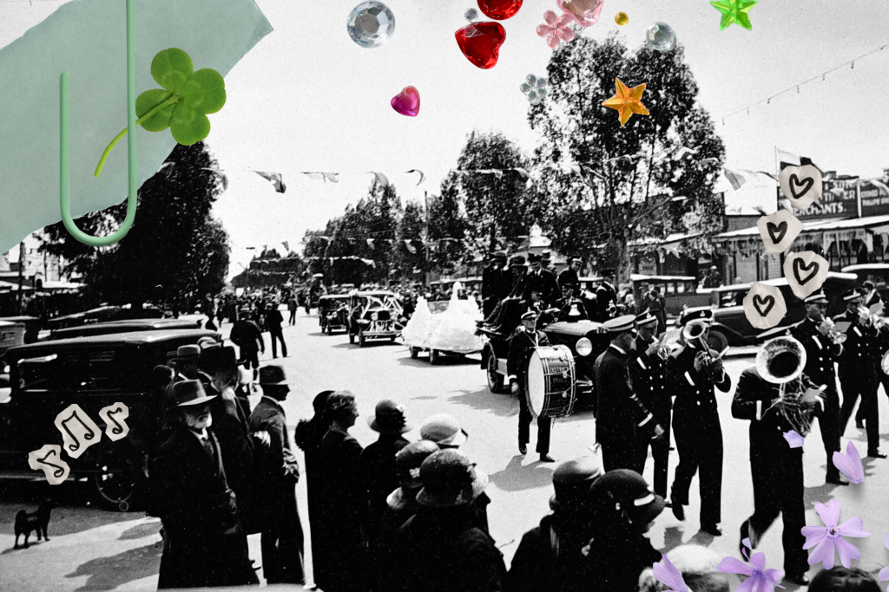

Writer · Genealogist · Sydney
Vanessa Jolly
Vanessa Jolly is a writer and genealogist currently working on her first novel. She writes literary historical fiction, as well as short-form nonfiction and poetry.
Vanessa is currently completing a Master’s degree in Creative Writing at Macquarie University and lives in Sydney with her scruffy husband and equally scruffy dog.
Selected work
Publications
Essays, family history, and other published pieces.

Family stories
Genealogy
Researching ordinary lives, curious details, and the stories that survive them.

I’ve been researching family history since 2010, and what started as a hobby quickly became an obsession—in the best possible way.
There’s something fascinating about piecing together the lives of ordinary people from old records, photographs, newspaper articles, and family stories. Every family has its mysteries, surprises, and larger-than-life characters, and I love the challenge of uncovering them.
From 2018 to 2023, I ran Kindred Genealogy, helping clients research their family histories and preserve their stories for future generations. It was a privilege to help people connect with their past, and some of the discoveries we made together were genuinely moving.
Around the same time, I created the Kindred Genealogy YouTube channel, where I shared genealogy tutorials, research tips, and stories from Australian history. My goal was to help people feel confident enough to tackle their own family history research, and I especially enjoyed getting to know the wonderful community that formed around the channel.
These days the channel is snoozing while I focus on my writing projects, but the videos are still available and I’d love to make more someday.
Genealogy has also led to some publishing projects of my own. Together with my mother, I compiled and self-published a family history book on one branch of our family, printing a small run for relatives. I’d love to create similar books for other branches in the future.
My passion for family history continues to influence my writing today. Many of the stories, personalities, and historical details I’ve uncovered through research have found their way into my historical fiction. After all, both genealogy and fiction begin with the same question: who were these people, and what was their story?
Visit the YouTube channelGet in touch
Write to me
For writing, genealogy, Australian history, or general enquiries, email Vanessa directly.
vmjollywriter@gmail.comThis opens your usual email app.